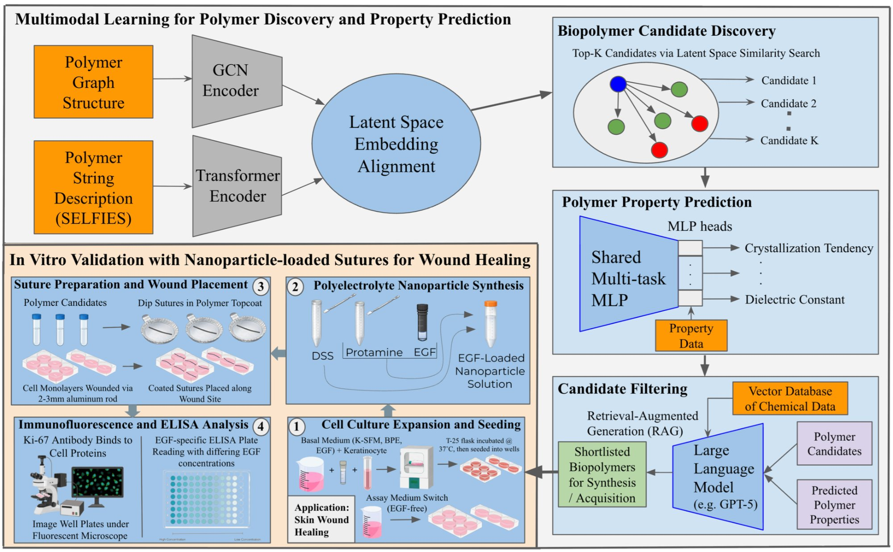
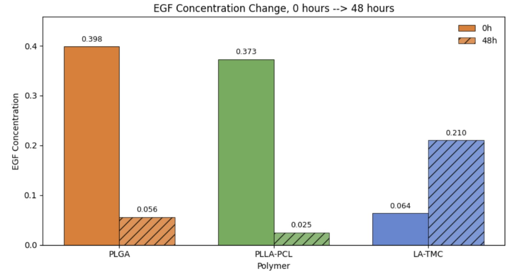
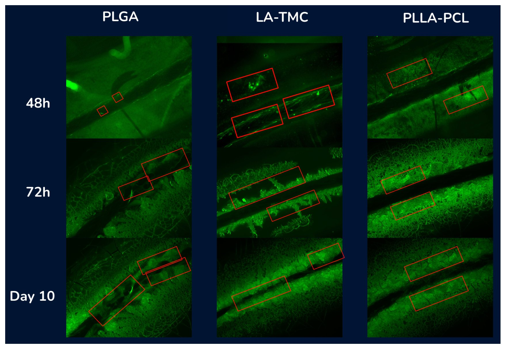

Therapeutic sutures can localize bioactive payloads directly to wound sites, offering a compelling alternative to systemic delivery. However, burst release—the rapid, uncontrolled efflux of payload upon implantation—overwhelms cell differentiation cascades, while mechanically fragile coatings lose shape integrity, both increasing infection susceptibility and impairing healing.
State-of-the-art suture coatings rely predominantly on poly(lactide-co-glycolide) (PLGA) and related linear aliphatic polyesters (PGA, PLA). While their biocompatibility and biodegradability are well-established, the combinatorial space of candidate polymers is vast, and systematic exploration beyond this narrow family has remained limited.
We introduce GenPoly, an end-to-end data-driven framework for bioresorbable polymer discovery. Starting from PLGA as a clinically prevalent baseline, GenPoly:
Data preparation converts polymer SMILES (PSMILES) from the PI1M dataset into Pseudo-polymer SELFIES (PSELFIES) strings and molecular graphs via RDKit and PyTorch Geometric, yielding 988,223 paired representations for pretraining.
A 4-layer GCN encodes molecular graphs (residual GCNConv blocks, global mean+max pooling). A 4-layer Transformer encoder processes tokenized PSELFIES. Both are projected into a shared 256-dim latent space and aligned with InfoNCE loss. A Transformer decoder reconstructs PSELFIES autoregressively (VAE-style), serving as a backtranslation mechanism to refine the encoder.
7.84M params · NVIDIA A100 · 10 epochs · AdamWMorgan fingerprints (dim=2048) feed a 3-layer shared MLP with 8 property-specific 2-layer heads. Labels from the Khazana dataset (6,264 DFT entries). Properties: Atomization Energy, Crystallization Tendency, Band Gap (chain & bulk), Electron Affinity, Ionization Energy, Refractive Index, Dielectric Constant.
Multi-task MSE · AdamW · early stop at epoch 126PLGA is encoded as the reference anchor. k=100 nearest neighbors are retrieved (92.59–97.52% similarity). Candidates with Ertl-Schuffenhauer synthetic accessibility score ≥ 5 are removed. Tanimoto fingerprint similarities computed on remaining candidates.
k-NN · SA Score ≤ 5 · Tanimoto SimilaritySMILES fingerprints, SELFIES, and textual descriptions from ChEBI-20-MM are embedded (OpenAI text-embedding-3-small) and stored in Weaviate. GPT-5 extracts motif signatures and clusters 91 filtered candidates into 8 interpretable polymer families. Human correction rate: 2/91 (97.8% inter-annotator agreement).
Weaviate · GPT-5 · 8 Clusters · 97.8% AgreementDSS-protamine nanoparticles loaded with rhEGF applied to dip-coated silk fibroin sutures (PLGA, LA-TMC, PLLA-PCL). Sutures placed across scratch wounds in confluent HEKa monolayers. Supernatant sampled at 0h and 48h via EGF ELISA (450nm); Ki-67 immunofluorescence performed at 0h, 48h, 72h, and Day 10.
HEKa · ELISA · Ki-67 · BSL-1 LabAcross all axes—payload retention, controlled release kinetics, and targeted keratinocyte proliferation—the AI-discovered LA-TMC (poly(l-lactide-co-trimethylene carbonate)) coating substantially outperforms both the PLGA baseline and the PLLA-PCL candidate.
| Polymer Coating | rhEGF 0h (ng/mL) | rhEGF 48h (ng/mL) | Change | Keratinocyte Binding (48h) |
|---|---|---|---|---|
| PLGA (baseline) | 0.398 | 0.056 | −86% | Poor |
| PLLA-PCL | 0.373 | 0.025 | −93% | Moderate |
| LA-TMC (discovered) | 0.064 | 0.210 | +330% | Strong — targeted |
LA-TMC was the sole polymer coating that facilitated controlled and sustained release. Its low 0h supernatant concentration indicates strong payload retention within the nanoparticle-polymer matrix, with controlled efflux over 48h—the ideal profile for therapeutic delivery without burst-induced hyperconcentration.
↑ Back to TopTo quantify rhEGF release, 250µL supernatant samples at 0h and 48h were flash-frozen at −80°C, then distributed into 12 wells (with duplicates). Absorbance was read at 450nm; a quadratic regression calibration curve (R²=0.9745) converted absorbances to EGF concentrations.

Immunofluorescence with the Ki-67 monoclonal antibody (1:200 in BSA blocking buffer) was performed at 48h, 72h, and Day 10. Ki-67 marks actively proliferating cells in mitosis or G₂ phase via MKI67 gene activation, providing a direct readout of keratinocyte growth at the wound bed.

ATR-FTIR spectroscopy on the DSS-protamine nanoparticle complex confirmed ion-pairing between DSS sulfate groups and protamine's arginine guanidinium chains at 1641.56, 1546.32, and 1123.41 cm¹, forming an anionic electrostatic microenvironment for cationic rhEGF retention. LA-TMC's unique C=O peak broadening (1740–1760 cm¹) indicates a more polar, interaction-permissive surface for sustained rhEGF-to-EGFR signaling.
↑ Back to TopGenPoly demonstrates that multimodal foundation models can discover polymer coating families beyond the well-explored PLGA/PGA/PLA space, with direct experimental translation. The LA-TMC family—a carbonate-containing polymer with the –O–C(=O)–O– motif—was not among standard suture coating candidates in the literature, yet outperforms them on every measured metric.
Several directions could extend this work:
GenPoly is general-purpose: the same pipeline applies to scaffold discovery for in situ tissue regeneration, drug-eluting stents, biodegradable implants, and other biomedical polymer applications.
↑ Back to Top